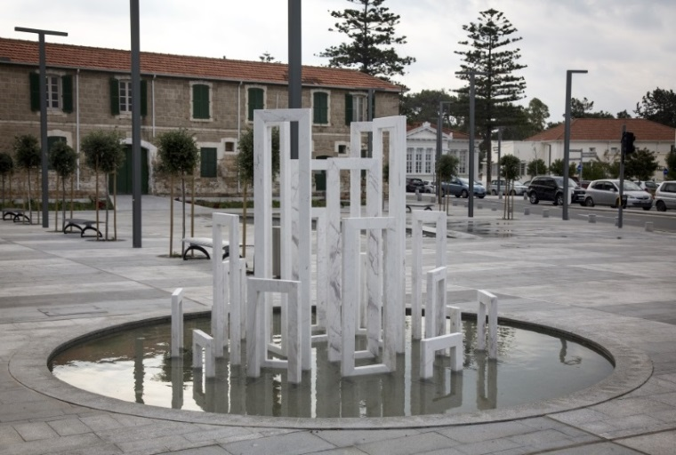
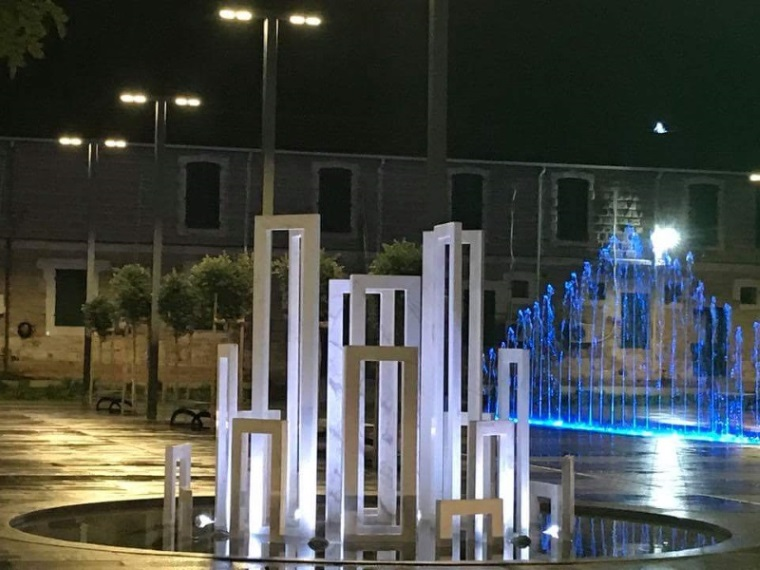

Η ανάδυση της Αφροδίτης (The Emergence of Aphrodite)
|  |
 |
Η ανάδυση της Αφροδίτης (The Emergence of Aphrodite)
Στο πλαίσιο του «Πάφος2017 Πολιτιστική Πρωτεύουσα της Ευρώπης» ο Χάρης Πασπαλλής, κατέθεσε το δίπτυχο γλυπτικό του αφιέρωμα στη θεά του έρωτα και της ομορφιάς, μέσα από μια διαδικασία αφενός οικειοποίησης και αφετέρου μετατόπισης στοιχείων συνδεδεμένων με την Κύπριδα θεά.
Στην γλυπτική μαρμάρινη εγκατάσταση υπό τον τίτλο «Η ανάδυση της Αφροδίτης», διατυπώνει μέσα από τους γλυπτικούς όγκους, καθώς αυτοί αναδύονται από την υδάτινη επιφάνεια, τη γέννηση της θεάς μέσα από τους αφρούς των κυμάτων. Μεταφέρει, έτσι, στην κεντρικότερη πλατεία της πόλης, την αύρα και την αίσθηση του αρχετυπικού γενέθλιου τόπου, της Πέτρας του Ρωμιού. Η αστική Αφροδίτη, με την όρθια ιεροπρέπειά της ακολουθεί την υψιτενή φορά των δέντρων στο φόντο και εισέρχεται μαζί τους στη σφαίρα μιας μεταφυσικής ανάτασης, όπου το γήινο σμίγει με το θείο, στο μεταίχμιο εκείνο όπου το σήμερα συναντά το χτες και οι μυθικές αφηγήσεις της Πάφου διοχετεύονται στην ίδια την καθημερινότητά της, συνιστώντας αναπόσπαστο μέρος της.
............................................τὴν δ᾽ Ἀφροδίτην
ἀφρογενέα τε θεὰν.............................................
κικλῄσκουσι θεοί τε καὶ ἀνέρες, οὕνεκ᾽ ἐν ἀφρῷ θρέφθη
Ἡσιόδου, Θεογονία 195–7
Her gods and men call Aphrodite, and the foam-born goddess ..., because she grew amid the foam
Hesiod, Theogony 195–7